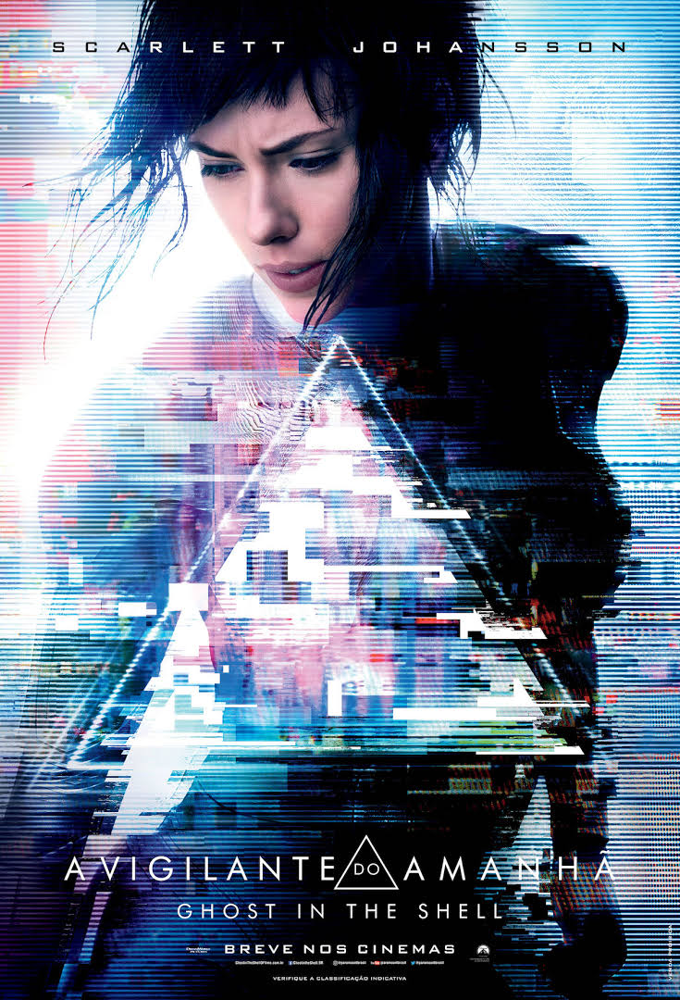
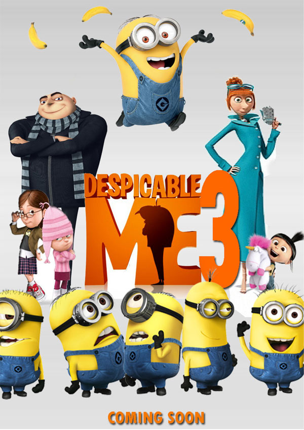

Logan
16 - (2017) Ficção Científica/Drama. Duração: 2h 21m
Lançamento: 2 de março de 2017 (Brasil)
Direção: James Mangold
Baseado em: Velho Logan; de Mark Millar; Steve McNiven
Produção: Marvel Entertainment; TSG Entertainment; The Donners' Company
Música composta por: Marco Beltrami

A Vigilante do Amanhã: Ghost in the Shell
14 - (2017) Fantasia/Mistério. Duração: 2h
Lançamento: 30 de março de 2017 (Brasil)
Direção: Rupert Sanders
Distribuidora: Paramount Pictures
Produção: Avi Arad, Steven Paul, Michael Costigan
Música composta por: Clint Mansell, Lorne Balfe

Meu Malvado Favorito 3
Livre - (2017) Ficção Científica/Animação. Duração: 1h 45m
Lançamento: 29 de junho de 2017 (Brasil)
Direção: Pierre Coffin, Kyle Balda
Produtoras: Illumination Entertainment, Universal Studios
Música composta por: Heitor Pereira